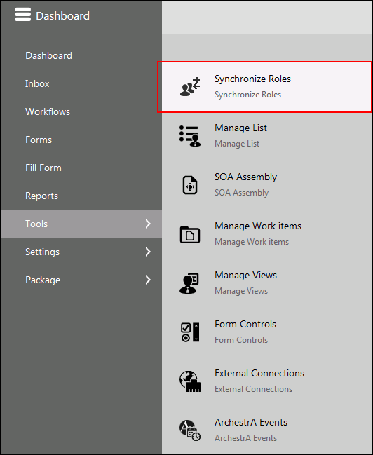

No
If you want cross domain users and roles mapping across active directory provider, then use the Synchronize Roles option to map the roles.
Example: Users 'John' and 'Jim' of domain 'TelematicsUS' and users 'Mike' and 'Bob' from the domain 'TelematicsAU' are added to the role "Team HR" of the domain 'TelematicsMain'.
You can see the Synchronize Roles list item in the Enterprise Console menu that you can use to map the cross domain provider roles. This list item is not available by default in the Enterprise Console menu. While creating a repository, if you choose Resource Provider as Active Directory and enable the 'Is Cross Domain Role Provider' option for cross domain users and roles mapping, then the Synchronize Roles sub-menu appears in Enterprise Console > Tools. This menu is available only for users with administrative rights.

Steps to synchronize roles:
The Synchronize Roles window appears.
The available roles will be listed in Choose Roles.
For example, search for 'team' role and it will list the available roles.
Once the synchronization of the selected role(s) is complete, a confirmation message about successful synchronization appears.